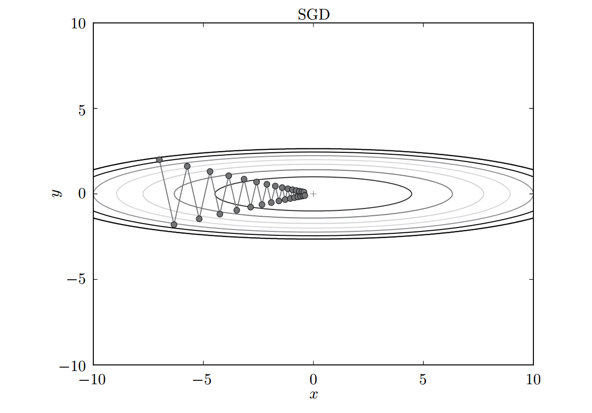
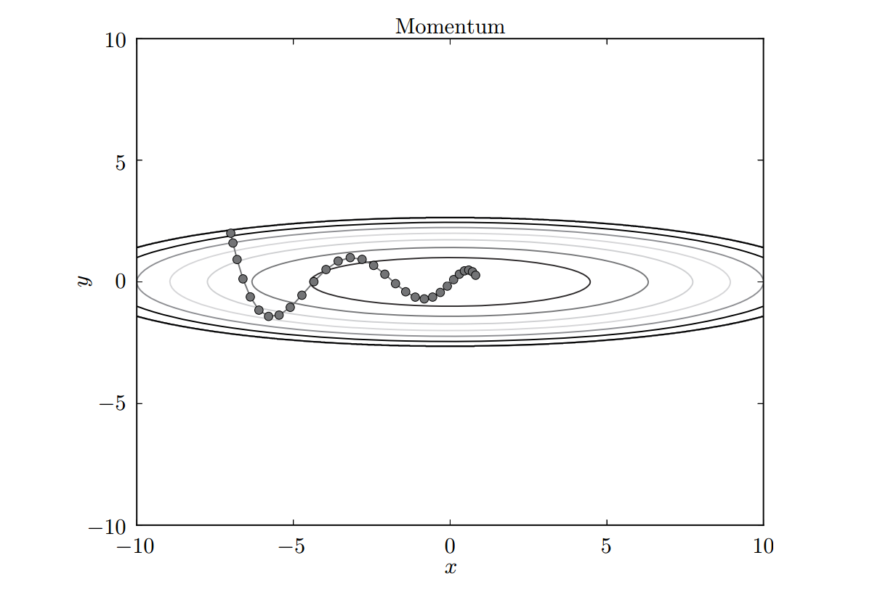
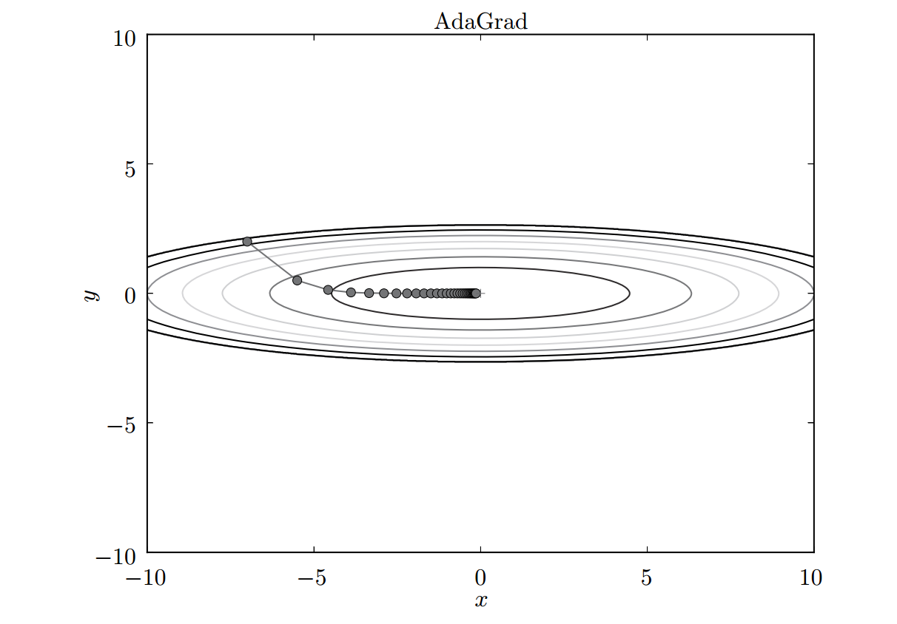
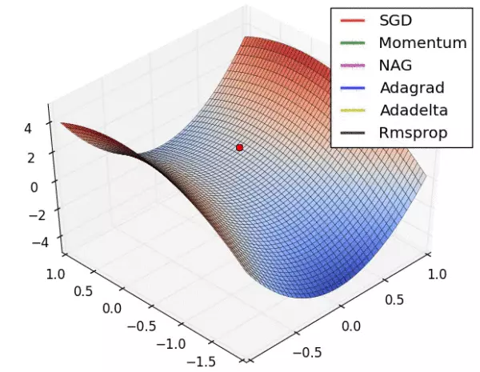
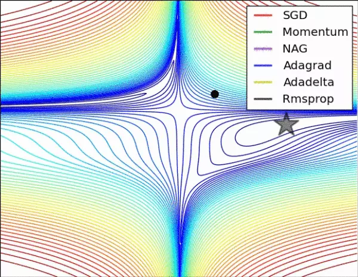

一、最优化
神经网络的学习的目的是找到使损失函数的值尽可能小的参数。这是寻找最优参数的问题，解决这个问题的过程称为最优化（optimization）。常见的最优化方法有梯度下降法、牛顿法、拟牛顿法和共轭梯度法等。
二、梯度下降法
梯度下降法是使用最广泛的最优化方法，在目标函数是凸函数的时候可以得到全局解。
使用参数的梯度，沿梯度反方向更新参数，并重复这个步骤多次，从而逐渐靠近最优参数，这个过程称为梯度下降法，也被称为“最速下降法”。
最速下降法越接近目标值的时候，需要步长越小，前进越慢，否则就会越过最优点。通常在机器学习优化任务中，有两种常用的梯度下降方法，分别是随机梯度下降法和批量梯度下降法。
所谓批量梯度下降（Batch gradient descent），就是使用所有的训练样本计算梯度，梯度计算稳定，可以求得全局最优解，但问题是计算非常慢，往往因为资源问题不可能实现。
所谓随机梯度下降（Stochastic gradient descent），就是每次只取一个样本进行梯度的计算，它的问题是梯度计算相对不稳定，容易震荡，不过整体上还是趋近于全局最优解的，所以最终的结果往往是在全局最优解附近。
通常我们训练的时候会进行折中，即从训练集中随机取一部分样本进行迭代，这就是常说的mini-batch训练了。
三、牛顿法、拟牛顿法和共轭梯度法
梯度下降法是基于一阶的梯度进行优化的方法，牛顿法则是基于二阶梯度的方法，通常有更快的收敛速度。该算法利用局部一阶和二阶的偏导信息，推测整个函数的形状，进而求得近似函数的全局最小值，然后将当前最小值设定成近似函数的最小值。
不过牛顿法作为一种迭代算法，每一步都需要求解目标函数的Hessian矩阵的逆矩阵，计算比较复杂。当Hessian矩阵不可逆时无法计算，矩阵的逆计算复杂度为$n^2$，当问题规模比较大时，计算量很大。
拟牛顿法通过用正定矩阵来近似Hessian矩阵的逆，不需要二阶导数的信息，简化了运算的复杂度。
共轭梯度法是一种通过迭代下降的共轭方向来避免Hessian矩阵求逆计算的方法，介于最速下降法与牛顿法之间。
四、SGD
深度学习中的SGD指mini-batch gradient descent。 在训练过程中，采用固定的学习率.
数学公式
$$
W \leftarrow W - \eta \frac {\partial L}{\partial W}
$$
代码实现
class SGD:
"""随机梯度下降法（Stochastic Gradient Descent）"""
def __init__(self, lr=0.01):
self.lr = lr
def update(self, params, grads):
"""
更新权重
:param params: 权重, 字典，params['W1'], ..
:param grads: 梯度, 字典, grads['w1']
:return:
"""
for key in params.keys():
params[key] -= self.lr * grads[key] SGD的缺点
- 选择合适的learning rate 比较困难, 且对所有的参数更新使用同样的learning rate.
- SGD容易收敛到局部最优，并且在某些情况下可能被困在鞍点.
四、Momentum
为解决随机梯度下降的问题，在1964年，Polyak提出了动量项（Momentum）方法。动量算法积累了之前梯度的指数加权平均，并且继续沿该方向移动，将前几次的梯度计算量加进来一起进行运算。
为了表示动量，首先引入一个新的变量v（velocity），v是之前梯度计算量的累加，但是每回合都有一定的衰减。动量法的思想就是将历史步长更新向量的一个分量$\alpha$，增加到当前的更新向量中，其具体实现为在每次迭代过程中，计算梯度和误差，更新速度v和参数$W$:
$$
\upsilon_{t+1} \leftarrow \alpha \upsilon_{t} - \eta \frac {\partial L}{\partial W_{t}}
$$
$$
W_{t+1} \leftarrow W_{t} + \upsilon_{t+1}
$$
原论文:http://www.cs.toronto.edu/~hinton/absps/momentum.pdf
如果前一刻的梯度与当前的梯度方向几乎相反，则因为受到前一时刻的影响，当前时刻梯度幅度会减小，反之则会增强。
形象地说，动量法就像我们从山上推下一个球，在滚落过程中累积动量，速度越来越快，直到达到终极速度。在梯度更新过程中，对在梯度点处具有相同方向的维度，增大其动量项，对于在梯度点处改变方向的维度，减小其动量项。
代码实现
class Momentum:
"""Momentum SGD"""
def __init__(self, lr=0.01, momentum=0.9):
self.lr = lr
self.momentum = momentum
self.v = None
def update(self, params, grads):
if self.v is None: # 初始化v
self.v = {}
for key, val in params.items():
self.v[key] = np.zeros_like(val)
for key in params.keys():
self.v[key] = self.momentum*self.v[key] - self.lr*grads[key]
params[key] += self.v[key]
和SGD相比，我们发现“之”字形的“程度”减轻了。这是因为虽然x轴方向上受到的力非常小，但是一直在同一方向上受力，所以朝同一个方向会有一定的加速。反过来，虽然y轴方向上受到的力很大，但是因为交互地受到正方向和反方向的力，它们会互相抵消，所以y轴方向上的速度不稳定。因此，和SGD时的情形相比，可以更快地朝x轴方向靠近，减弱“之”字形的变动程度。
总体而言，momentum能够在相关方向上加速学习，抑制震荡，从而加速收敛。
五、Nesterov
Nesterov加速梯度下降法（Nesterov Accelerated Gradient，NAG）是动量算法的一个变种，同样是一阶优化算法，但在梯度评估方面有所不同。NAG能给动量项一个预知的能力，并且收敛速度更快。其更新算法如下：
$$
\upsilon_{t+1} \leftarrow \alpha \upsilon_{t} - \eta \frac {\partial L(W_t + \alpha \upsilon_t)}{\partial W_{t}}
$$
$$
W_{t+1} \leftarrow W_{t} + \upsilon_{t+1}
$$
我们利用动量项$\alpha v_t$更新参数$w_t$，通过计算$(W_t + \alpha v_t)$得到参数未来位置的一个近似值，计算关于参数未来的近似位置的梯度，而不是关于当前参数$W_t$的梯度，这样NAG算法可以高效地求解。
我们可以将其抽象为球滚落的时候，一般是盲目地沿着某个斜率方向，结果并不一定能令人满意。于是我们希望有一个较为“智能”的球，能够自己判断下落的方向，这样在途中遇到斜率上升的时候能够知道减速，该思想对于RNN性能的提升有重要的意义。
六、Adagrad
在神经网络的学习中，学习率（数学式中记为η）的值很重要。学习率过小，会导致学习花费过多时间；反过来，学习率过大，则会导致学习发散而不能正确进行。
在关于学习率的有效技巧中，有一种被称为学习率衰减（learning rate decay）的方法，即随着学习的进行，使学习率逐渐减小。
和Momentum直接把动量累加到梯度上不同，它是通过动量逐步减小学习率的值，使得最后的值在最小值附近，更加接近收敛点。
数学公式
$$
h \leftarrow h + \frac {\partial L}{\partial W} \cdot \frac {\partial L}{\partial W}
$$
$$
W \leftarrow W - \frac {\eta}{\sqrt h}\cdot\frac {\partial L}{\partial W}
$$
在更新参数时，通过乘以$\frac {1}{\sqrt h}$ ，就可以调整学习的尺度
前期$g_t$较小的时候，正则化项$\frac{1}{\sqrt h}$较大，能够放大梯度；后期$g_t$较大的时候，正则化项较小，能够约束梯度，适合处理稀疏梯度。
但Adagrad算法同样依赖于人工设置一个全局学习率η，设置过大的话，会使正则化项过于敏感，对梯度的调节过大。
代码实现
class AdaGrad:
"""AdaGrad"""
def __init__(self, lr=0.01):
self.lr = lr
self.h = None
def update(self, params, grads):
if self.h is None:
self.h = {}
for key, val in params.items():
self.h[key] = np.zeros_like(val)
for key in params.keys():
self.h[key] += grads[key] * grads[key]
params[key] -= self.lr * grads[key] / (np.sqrt(self.h[key]) + 1e-7)
# 为了防止当self.h[key]中有0时，将0用作除数的情况。添加了1e-7 
基于Adagrad的最优化的更新路径
由图可知，函数的取值高效地向着最小值移动。由于y轴方向上的梯度较大，因此刚开始变动较大，但是后面会根据这个较大的变动按比例进行调整，减小更新的步伐。因此， y轴方向上的更新程度被减弱，“之”字形的变动程度有所衰减。
特点
- 前期放大梯度，加速学习，后期约束梯度
- 适合处理稀疏梯度
缺点
中后期，分母上梯度的平方的积累将会越来越大，使gradient–>0, 使得训练提前结束。
七、Adadelta
Adadelta算法的出现可较好地解决全局学习率问题，其本质是对Adagrad算法的扩展，同样是对学习率进行自适应约束，但是计算上进行了简化。Adagrad算法会累加之前所有的梯度平方，而Adadelta算法只累加固定大小的项，并且仅存储这些项近似计算对应的平均值。其公式如下：
$$
h_t \leftarrow \alpha h_{t-1} + {(1-\alpha)}\frac {\partial L}{\partial W_t} \cdot \frac {\partial L}{\partial W_t}
$$
$$
\Delta x_t = \frac {\sqrt{\sum_{k=1}^{t-1}\Delta x_k}}{\sqrt h_t}\frac {\partial L}{\partial W}
$$
$$
W \leftarrow W - \Delta x_t
$$
Adadelta不依赖于全局学习率，训练初、中期，加速效果理想化，训练后期，反复在局部最小值附近抖动。
原论文: https://arxiv.org/abs/1212.5701
八、RMSProp
RMSProp可以算作Adadelta的一个特例，依然依赖于全局学习率。RMSProp效果趋于Adagrad和Adadelta之间，适合处理非平稳目标，适用于RNN的优化。
数学公式
$$
h \leftarrow \alpha h + (1-\alpha)\frac {\partial L}{\partial W} \cdot \frac {\partial L}{\partial W}
$$
$$
W \leftarrow W - \eta \frac {1}{\sqrt h}\frac {\partial L}{\partial W}
$$
代码实现
class RMSprop:
"""RMSprop"""
def __init__(self, lr=0.01, decay_rate = 0.99):
self.lr = lr
self.decay_rate = decay_rate
self.h = None
def update(self, params, grads):
if self.h is None:
self.h = {}
for key, val in params.items():
self.h[key] = np.zeros_like(val)
for key in params.keys():
self.h[key] *= self.decay_rate
self.h[key] += (1 - self.decay_rate) * grads[key] * grads[key]
params[key] -= self.lr * grads[key] / (np.sqrt(self.h[key]) + 1e-7)九、Adam
Adam (Adaptive Moment Estimation)本质上是带有动量项的RMSProp。Adam的优点主要在于参数偏置校正。它利用梯度的一阶矩估计和二阶矩估计动态调整每个参数的学习率。其公式如下：
$$
m_t \leftarrow \beta_{1} m_{t-1} + (1-\beta_1)\frac {\partial L}{\partial W}
$$
$$
v_t \leftarrow \beta_{2} v_{t-1} + (1-\beta_2)\frac {\partial L}{\partial W} \cdot \frac {\partial L}{\partial W}
$$
$$
\hat m_t = \frac {m_t}{(1-\beta_1)}
$$
$$
\hat v_t = \frac {v_t}{(1-\beta_2)}
$$
$$
W_t = W_{t-1} - \alpha \frac{\hat m_t}{\sqrt{\hat v_t}}
$$
Adam会设置3个超参数。一个是学习率（论文中以α出现），另外两个是一次momentum系数$\beta_1$和二次momentum系数$\beta_2$。根据论文，标准的设定值是$\beta_1$为0.9， $\beta_2$ 为0.999。设置了这些值后，大多数情况下都能顺利运行。
其中，$m_t$和$v_t$分别是对梯度的一阶和二阶矩估计，即对期望$E|g_t|$和$E|g_t^2|$的估计, $\hat m_t$、$\hat v_t$是对$m_t$和$v_t$的校正，近似为对期望的无偏估计。由公式可得，Adam算法可以根据梯度进行动态调整，对学习率有一个动态约束。
Adam算法的优点主要在于经过偏置校正后，每一次迭代学习率都有个确定的范围，使参数比较平稳；对内存需求较小，适用于大多数非凸优化问题，尤其适合处理大数据集和高维空间问题。
原文： https://arxiv.org/abs/1412.6980
十、Nadam
Nadam类似于带有Nesterov动量项的Adam。对学习率有了更强的约束，同时对梯度的更新也有更直接的影响。一般而言，使用带动量的RMSprop或者Adam的情况下，大多可以使用Nadam取得更好的效果。
十一、不同算法比较


- 如果数据是稀疏的，就用自适应算法, 即Adagrad, Adadelta, RMSProp, Adam
- RMSProp, Adadelta, Adam 在很多情况下的效果是相似的。
- Adam 就是在 RMSprop 的基础上加了 bias-correction 和 momentum，随着梯度变的稀疏，Adam 比 RMSprop 效果会好。
- SGD 虽然能达到极小值，但是比其它算法用的时间长，而且可能会被困在鞍点。
十二、参考
《深度学习入门: 基于Python的理论与实现》
《深度学习之图像识别：核心技术与案例实战》